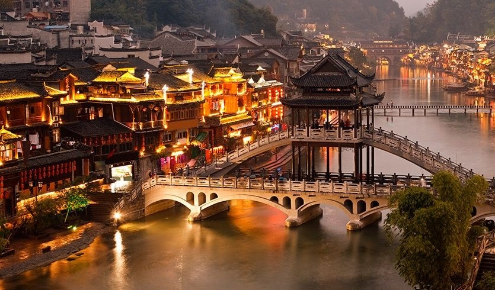

China |
|
República Popular da China, também conhecida simplesmente comoChina, é o maior país da Ásia Oriental e o mais populoso do mundo, com mais de 1,38 bilhão de habitantes, quase um quinto da população da Terra. É uma república socialista, governada peloPartido Comunista da China (PCC) sob um sistema unipartidário e que tem jurisdição sobre vinte e duas províncias, cinco regiões autônomas (Xinjiang, Mongólia Interior, Tibete, Ningxia e Guangxi), quatro municípios (Pequim, Tianjin, Xangai e Chongqing) e duas Regiões Administrativas Especiaiscom grande autonomia (Hong Kong e Macau). A capital da RPC é Pequim. Com aproximadamente 9,6 milhões de quilômetros quadrados, a República Popular da China é oterceiro (ou quarto) maior país do mundo em área total e o terceiro maior em área terrestre. Sua paisagem é variada, com florestas de estepes e desertos (como os de Gobi e de Taklamakan) no norte seco e frio, próximo da Mongólia e da Sibéria (Rússia), e florestas subtropicais no sul úmido e quente, próximo ao Vietnã, Laos e Mianmar. O terreno do país, a oeste, é de alta altitude, com oHimalaia e as montanhas Tian Shan formando fronteiras naturais entre a China, a Índia e a Ásia Central. Em contraste, o litoral leste da China continental é de baixa altitude e tem uma longa faixa costeira de 14 500 quilômetros, delimitada a sudeste pelo Mar da China Meridional e a leste peloMar da China Oriental, além dos quais estão Taiwan, Coreia (Norte e Sul) e Japão. A nação tem uma longa história, composta por diversos períodos distintos. A civilização chinesa clássica — uma das mais antigas do mundo — floresceu na bacia fértil do rio Amarelo, na planície norte do país. O sistema político chinês era baseado em monarquias hereditárias, conhecidas como dinastias, que tiveram seu início com a semimitológica Xia (aproximadamente 2 000 a.C.) e terminaram com a queda dos Qing, em 1911. Desde 221 a.C., quando a dinastia Qin começou a conquistar vários reinos para formar um império único, o país expandiu-se, fraturou-se e reformulou-se várias vezes. A República da China, fundada em 1911 após a queda da dinastia Qing, governou ocontinente chinês até 1949. Em 1945, a república chinesa adquiriu Taiwan do Império do Japão, após o fim da Segunda Guerra Mundial. Na fase de 1946-1949 da Guerra Civil Chinesa, o Partido Comunista derrotou o nacionalista Kuomintang no continente e estabeleceu a República Popular da China, em Pequim, em 1 de outubro de 1949, enquanto o Partido Nacionalista mudou a sede do seu governo para Taipei. Desde então, a jurisdição da República da China está limitada à Taiwan e algumas ilhas periféricas (incluindo Penghu, Kinmen e Matsu) e o país recebe reconhecimento diplomático limitado ao redor do mundo.
 |